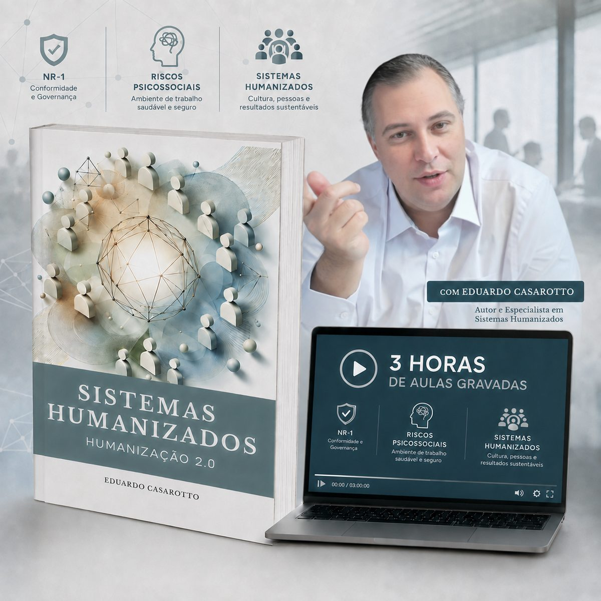
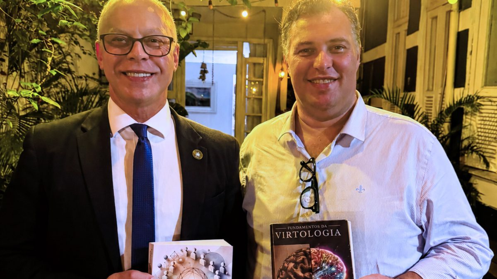

Livro + aulas bônus · Eduardo Casarotto
Sistemas Humanizados · Humanização 2.0
A metodologia completa para alinhar o funcionamento organizacional com o funcionamento humano. Não é um livro de sensibilização: é o manual de construção do sistema:
- Gestão;
- Fluxogramas de processo;
- Manuais;
- Políticas internas...
Tudo desenhado em torno do funcionamento psicológico humano, tornando a humanização auditável.

O que vem junto
O livro, com os manuais prontos
Como humanizar uma empresa de ponta a ponta, incluindo os manuais que a organização adapta e aplica: políticas internas, ética, feedbacks, atendimento, personalidade e a comissão interna de humanização. Documentos de trabalho, não conceitos soltos.
3 horas de aulas bônus gravadas sobre a NR-1
Aulas online com Eduardo Casarotto sobre a relação entre a exigência de gestão de riscos psicossociais da NR-1 e os Sistemas Humanizados: o que a norma passou a cobrar, e como o sistema responde.
O que este livro é
Quase tudo o que se publica sobre humanização fala da relação: do olhar, da escuta, do modo como uma pessoa trata a outra. Isso é necessário, e tem um limite conhecido: depende de quem está no cargo. Troca o gestor, e a prática vai embora com ele.
Este livro trabalha na outra camada: a que fica quando as pessoas mudam. As regras, as políticas, os fluxos e os manuais escritos da organização.
A pergunta que atravessa os 27 capítulos é sempre a mesma: o que está escrito bate com o modo como o ser humano funciona? Onde bate, mantém-se. Onde não bate, o livro mostra como reescrever, com critério que qualquer um confere: os cinco filtros que validam se uma estrutura é humanizada ou apenas afirma que é.
É por isso que a obra se chama Humanização 2.0. Não é uma humanização mais bonita. É uma humanização que dá para verificar.
Este livro foi catalogado na Biblioteca do Senado Federal - sendo a única obra que abarca a humanização sistêmica organizacional, de ponta a ponta.

O que está dentro
Os 27 capítulos seguem a ordem de quem vai construir, em três blocos:
-
1
O fundamento
O que é Humanização e o que é um Sistema Humanizado. Os cinco filtros que validam qualquer estrutura. O orgulho e o egoísmo como sistemas do cérebro, e por que é a regra escrita que decide qual dos dois a organização aciona. A história de como o trabalho chegou até aqui, de Taylor a Maslow, e as faixas de evolução organizacional, da empresa primitiva à empresa que opera por propósito.
-
2
A construção
A parte maior do livro. Governança Humanizada, capítulo a capítulo. RH Humanizado por inteiro: descrição de cargo, recrutamento, plano e gestão de carreira, avaliação de desempenho com a Terceira Competência, treinamento, pesquisa de clima, benefícios e até a cartilha de desligamento. E o manual das Necessidades Humanas, com ações práticas de RH para cada necessidade, grupo por grupo.
-
3
A operação
Saúde mental no trabalho: burnout, brownout e boreout, com a leitura estrutural de cada um e o desenho do departamento de saúde mental. Os manuais de feedbacks, de atendimento ao público e de personalidade. A CIPIH, comissão interna análoga à CIPA, voltada à prevenção e ao incentivo da humanização. Espaço físico, inclusão e, por fim, a estrutura de um projeto de certificação em humanização.
Os manuais prontos
A diferença prática deste livro está no formato: boa parte dos capítulos não descreve o que fazer. Entrega o documento.
Manual de Humanização de Políticas Internas
O roteiro para revisar o que a organização já tem escrito, política por política, contra o funcionamento humano.
Política de Ética Humanizada e Compliance
A base de uma política de ética que vai além de cumprir lei: previne prática abusiva e protege quem denuncia.
Manual de Feedbacks Humanizado
Como estruturar o retorno contínuo, no ritmo em que o cérebro de fato aprende, e não uma vez por ano.
Manual de Atendimento ao Público
As regras de ouro do atendimento humanizado, prontas para treinar equipe: acolhimento, prontidão, não julgamento, brandura.
Manual das Necessidades Humanas
Para cada necessidade humana mapeada pela obra, as ações concretas que o RH implementa, grupo por grupo.
Manual de Personalidade
O instrumento para entender temperamento, caráter e identidade no encaixe entre pessoa e cargo.
CIPIH
A estrutura completa da Comissão Interna de Prevenção e Incentivo de Humanização: composição, papéis e funcionamento.
Projeto de Certificação em Humanização
Estrutura, processos e diretrizes para certificar uma organização, com os critérios que tornam a verificação possível.
As bônus aulas sobre a NR-1
A NR-1 passou a exigir das organizações a gestão de riscos psicossociais. Para a maioria das empresas, isso virou uma pergunta sem resposta: gerir como?
As 3 horas de aulas bônus gravadas que acompanham o livro respondem exatamente essa pergunta. Eduardo Casarotto percorre a relação entre a exigência da norma e os Sistemas Humanizados: o que são riscos psicossociais na leitura do funcionamento humano, onde eles nascem dentro da estrutura, e como o sistema descrito no livro responde ao que a norma cobra.
São aulas bônus online, gravadas, para assistir quando quiser, no seu ritmo. O acesso acompanha a compra do livro.
Ação pontual não atende gestão de risco. Sistema atende. É essa a ponte que as aulas constroem.
Público indicado
Para quem decide e implementa
Gestores, diretores, RH, SESMT e compliance que precisam sair do evento pontual e montar estrutura: o livro entrega o desenho do sistema e os documentos para começar.
Vale igualmente para instituição pública, escola, hospital e qualquer organização onde gente trabalha com gente: a metodologia não é exclusiva de empresa.
Para quem atende e assessora
Psicólogos organizacionais, terapeutas, consultores e profissionais de saúde mental no trabalho encontram aqui a leitura estrutural do adoecimento: burnout, brownout e boreout como sintomas de sistema, não só de indivíduo.
É também a base teórica e prática da Pós-graduação em Sistemas Humanizados.
Quem escreveu
Eduardo Casarotto é pesquisador, autor, consultor, filantropo, fundador do Instituto Virtudes e criador da Virtologia e da Humanização 2.0. Condecorado com o título de Comendador Cavaleiro pela Câmara de Justiça de São Paulo.
Com mais de 25 anos de atuação como terapeuta e consultor organizacional, formou mais de 2.000 terapeutas e dedicou sua trajetória ao estudo do funcionamento humano e da relação entre ambiente, comportamento e adoecimento.
Ao longo de sua atuação, desenvolveu trabalhos de formação e orientação metodológica para empresas, instituições públicas, organizações, hospitais, escolas e unidades prisionais, levando sua abordagem para contextos onde o funcionamento humano precisa ser compreendido não apenas no indivíduo, mas também nos sistemas em que ele vive e trabalha.
É autor de mais de 20 livros e de artigos publicados em periódicos científicos. Sua metodologia já foi apresentada no Plenário do Senado Federal, discutida em ambientes institucionais e aplicada em diferentes realidades humanas, organizacionais e sociais.
O que costumam perguntar
Preciso conhecer a Virtologia antes?
Não. O livro apresenta os conceitos de que precisa no momento em que aparecem. Quem quiser a base completa da escola encontra no Fundamentos da Virtologia, mas ele não é pré-requisito.
É só para empresas?
Não. A metodologia se aplica a qualquer instituição onde seres humanos convivem sob regras escritas: empresa, escola, hospital, gestão pública, tribunal, unidade prisional. Os exemplos do livro percorrem vários desses ambientes.
O livro garante conformidade com a NR-1?
Nenhum livro garante conformidade, e desconfie de quem prometer isso. A conformidade depende da implementação na sua organização e da avaliação dos profissionais responsáveis por ela. O que o livro e as aulas entregam é o que costuma faltar: um sistema estruturado de gestão do fator humano, com critérios verificáveis, em vez de ações pontuais que não se sustentam em auditoria.
Qual é a relação com a Pós-graduação em Sistemas Humanizados?
O livro traz a metodologia; a Pós-graduação em Sistemas Humanizados ensina a construí-la passo a passo, em 15 módulos e 360 horas, com certificação da FACEO, faculdade credenciada pelo MEC. Quem quer se formar implementador vai para a pós. Quem quer dominar a metodologia começa pelo livro.
Como recebo as aulas bônus?
As aulas bônus são online e gravadas, com 3 horas de duração total. Não são cobradas: o acesso acompanha a compra do livro.
Para conhecer o método antes do livro, a apresentação completa da Humanização 2.0 está em:
Conhecer a Humanização 2.0